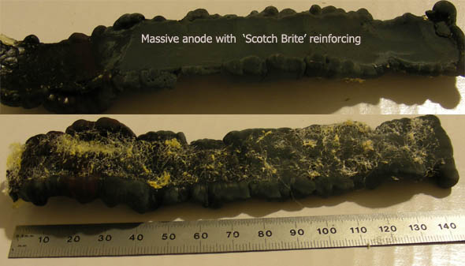
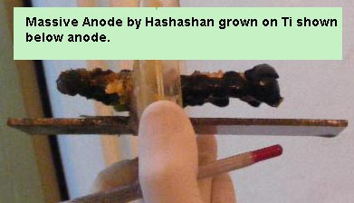

Massive anode by 'Tentacles'
I've been plating another anode, this time using (almost) Hashashan's method.
I sanded the Ti strip with P220 sandpaper, and then used my dremel to round the edges nicely, wet sanded (EtOH) with 1000 grit SiC paper, and then painted the side that I hope to not plate with some cheap black spray paint. I covered the edges with hot melt glue, making sure to heat the Ti up so it would stick, and also covered the painted side with more hot melt glue. I then sanded the working side again with 1000 grit paper, then tacked on the scotch brite.
I prepared 2L of solution as my bath:
250g/l of Pb(NO3)2
1.65g/l of NaF
15g/l of Cu(NO3)2
2.2g/l of 50/50 200/325 mesh SiO2
10ml/l of 80% HNO3
I'm running it at 52C on my hotplate, with the stir bar running.
Current density is 15ma/cm2, running off 3.3v on my new (and cheap) ATX PSU. PbO2 started plating immediately when I turned on the power.
edit: Came home last night and it was pulling 845ma, which was a bit high for my liking - I know it's in the acceptable plating current range, but I bumped the voltage down to 1.7V (5.0v - 3.3v). It's pulling ~5ma/cm2.
Plating continues.
Today:
Anyways I decided to stop plating this anode, weird things were starting to happen.. I peeled it off the Ti, which wasn't so much peeling as breaking off a few little bits to release it.. It actually curved while plating, which is very strange. After I got it off, it was somewhat broken, so I lassoed it with some wire and dunked it in to plate it back together.. The result.. 168.7g of very ugly PbO2. I doped the plating solution with NaF, the resulting PbO2 is smooth, and shimmers."

Massive Anode by 'Hashashan'

Recently I was working on a massive
The anode was grown from a piece of Ti through a thick (about 4mm) piece of plastic fiber cloth(aka scotchbright). The setup had controlled temperature of 50-58C (sometimes it went higher.... I wasn't around to babysit it, corrected it as soon as I could) at the begining it even had PH controll (some PbO that I dumped inside and a magnetic stirrer) but later I ran out of PbO so added NaOH solution from time to time to keep the acid down. Also I added some ceramic dust and shreads. It seems like it helped, almost no bubble pitting at all.
I ran about 1 amp(30-40 ma/cm) current for 3 days, it is about 5mm thick in the center and really overgrown on the sides (I tried to prevent this by building a hot melt glue frame for it to grow inside but it overgrew it on the first day), so on the sides its about 1cm thick.
It peeled quite easily from the Ti strip.
The anode is about 3.5cm*10cm and it weighs 175gr.
HIT THE BACK BUTTON ON YOUR BROWSER
BACK TO TOP